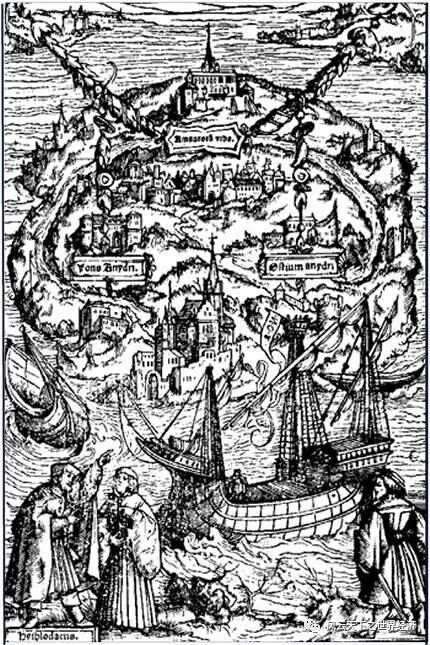

“一个人可以仰望星辰乃至太阳，何至于喜欢小块珠宝的闪闪微光？” ——题记

追求乌托邦的战役 自古以来便凝望着深渊
治“不均”，是自古以来政治家们的使命。在新航路尚未开辟，莫尔尚未能周游列国、找寻空想社会主义之前，追求乌托邦的战役便已在世界熊熊燃起。对乌托邦的追求，西方早已与东方形成了无声的默契。“丘也闻有国有家者，不患寡而患不均，不患贫而患不安。盖均无贫，和无寡，安无倾”，这是孔孟之派之于世界大同的追求。
可是，乌托邦之所以成为乌托邦，正是因为它诗意盎然的叙事之中，暗含着对现实的讽刺和批判——一端是桃花源的愿景，另一端则面向了政治锦标赛盲目的深渊。
毕竟，正如“理性经济人”的假设一般，我们对政策制定者总存在着理想化的假定——高屋建瓴、政清人和。可是，因为有限的任期和政治锦标赛晋升的激励，对胜利的渴望自然催促着他们穷兵黩武，在任期内迅速取胜。
而取消自由贸易，正是让乌托邦向深渊靠近的武器之一。
SS定理（The Stolper-Samuelson Theorem）告诉我们，自由贸易的存在让稀缺使用要素部门的回报下降，让密集使用要素部门的回报上升，也就是说，一国之内，自由贸易，必然带来赢家和输家。
在深渊面前，自古以来，就有政策制定者扬着平等仁爱的长旗讨伐着贸易——近100年前，斯穆特猛烈抨击了自由贸易，他高呼着反对那些“背叛美国利益并抛弃民族主义精神的国际主义者”，于是，斯姆特-霍利关税法将20000多种的进口商品关税提升到历史最高水平；几十年后的21世纪，特朗普在上任第一天，一举兑现了竞选诺言，美国从此退出TPP（跨太平洋伙伴关系协定），逆全球化趋势再一次抬头。
诚然，他们希望得到输家的支持，方能在政治上取信于民。而取消自由贸易，确实也短暂地让平等看见了曙光——至少在疫情前，特朗普政府对中国和其他国家的一系列“贸易战”政策，降低了贸易逆差的同时，也有助于为美国某些低端产业创造一定的就业岗位，某种程度上确实改善了低技能工人的生存处境。
但是，“当你凝望深渊之时，深渊也在凝望着你”——
凝视深渊过久 深渊将回以凝视
取消自由贸易，为何是对深渊的凝望？
贸易保护的代价，让消费者福利落入了损伤的陷阱。贸易保护主义拉高了相关消费品的成本，导致消费品的产品价格上升，消费者的相对收入降低，福利减少。在美国历史上，这个事实早已有所印证——2009年奥巴马对轮胎征税，虽然使得美国轮胎业增加了1200个就业人数，但是轮胎价格上涨降低了美国家庭的消费能力，零售业约3500人因此失业。
美国经济研究局NBER提供的文件表明，2018年中美贸易战将物价上涨的成本转嫁给美国企业与消费者，使得美国实际收入由此每月减少约14亿美元。想必众人对乌托邦的愿景，自是希望福利增益，可是，贸易限制背后对消费者福利的吞噬，何尝不是一种对穷人的剥削？何尝不会让平等落入深渊？
深渊所袭卷而去的，不只是消费者福利，更是做大蛋糕的希冀——它看似可以粉饰低技能劳工的就业数据，但是这消耗了许多产业发展的元气，侵吞了更多本可以守护的“蛋糕”，这何不是一种“一叶障目”？对于发达国家而言，自由贸易允许他们进口成本较低的原材料，从而降低某些产业的生产成本，进而创造利润空间。例如，一台手机的制造，如果能在劳动力成本较低的国家完成“拼装服务”这一要素的进口，有助于降低手机的生产成本，从而提高相关产业的利润率。同时，自由贸易为负外部性提供了转移的可能性和可行性，是规避风险的一种方式。产业转移的雁阵理论表明，不同国家处于发展阶段，他们产业升级会有相似的过程，某些相对低端的产业在本国衰退，在他国发展，这正是将负外部性成本转移的一个方式，例如某些低端产业背后的污染成本，至少在产业转移的背景之下，可以减轻本国的环境压力。向乌托邦的前进的要义，最好的期冀，自是实现“平等的繁荣”，这背后的逻辑，首先是“繁荣”，而不是“平等的贫穷”，毕竟，没有蛋糕，切分的意义在何？如果通过贸易保护政策强行引进本该被基本淘汰的供应链，实质上是占据了产业升级所需使用的资源，这不利于经济繁荣，当权者更没有底气去追求平等。
而深渊之下，是一条通往无尽恐慌的不归路——敌人们依然会源源不断、纷沓而至。在全球化发展程度较高的背景之下，以贸易保护手段来保护本国相关产业就业的措施收效甚微，不够彻底。产业转移的步伐虽是亦步亦趋，但并不会因为贸易停止而在全球停滞。上世纪70至80年代，韩国的纺织业遭遇了美国的重重关税打击，为应对这一危机，韩国将本国纺织业转移至孟加拉国，一方面缓解了国家产业危机，另一方面又使得孟加拉国成为全球第二大成衣出口国，而此时，孟加拉国取代了韩国，又一次用自己低成本的优势向美国纺织业发起冲锋的号角。因此，贸易保护阻碍不了产业变动，更无法挽救输家的困境，深渊之下，难有上岸的解药。
远离深渊，少不了回眸与自省
不被深渊凝视，或许需要远离深渊，而非在深渊前等待解药，毕竟，深渊之前，再坚韧的底气也拦不住坠落的恐惧。
政策制定者最终选择了凝视深渊，自是少不了“经之以五事，校之以计，而索其情”的求索和论证。但是，站在深渊之前，逃离恐惧的急切、或是对政治锦标赛胜利的渴求，是不是蒙住了回眸的双眼呢？自由贸易真的有如此大的力量去打破平等的秩序吗？
因此，与其抱怨深渊的不幸，不如回眸自省，向内探求，寻找转变的动因。当政者们或许忽略了这一事实：一国经济进步的过程中，产业结构这趟列车亦行驶在升级的轨道之上。那些被社会财富遗忘的低技能工人，正是列车错过不再的旅客——产业结构总在升级的路途，总有劳动力会面临淘汰的风险。因此，如果仅仅是诉诸于自由贸易的罪恶，这样的方案，对于塑造理想的乌托邦而言，不够深刻、亦不够体面。
列车虽然无法回头，但是错过的“旅客”们却可以再出发，寻找新的旅程。国际劳动力流动，有助于实现“各得其所”的平等。已经转移完成产业中的工人，或许可以去国外寻找新的机会——这需要设置较为完善的劳动力流动机制，促进地区间劳动力交流。例如，建立国际通用标准的劳动力技能资格认证，设置更为灵活的中长期签证制度，让旅客们启程无忧，落地无怨。
或许有的旅客，因为种种原因，难以再启程，但是即使是留在原地安居，亦可创造新的风景。对于特定产业、地区和劳动力来讲，劳动力流动本身不可行，相关传统产业也难以完全向国外转移，但差异化、创新化的品牌塑造或许能够充分利用劳动力，并顺应需求结构升级的趋势，从而提升传统产业的附加值，增加这部分劳工的收入。品牌塑造所需要的劳动力技能培训，相对于技术进步的技能培训，其成本较低且操作灵活，正如越来越多的农民能够参与到网络直播销售新鲜农产品，即使停留在原地，新风景的创造，亦具有无限的可能。
长期主义背后，是乌托邦真正的星芒
产业结构升级或许本就是一趟孤独的旅程——人群熙熙攘攘，有人加入，也有人离开不再来。若想多留一会，当政者能做的也只有为他们续费这趟车票，这便少不了教育的加持。但是，值得反思的是，在技术升级的路径之中，当前的教育又是否有跟上技术升级的步伐呢？尤其是基础阶段、中级阶段的教育，是否因为在应试、内卷的压力之下而缺乏了对时代新信息的传递呢？现在教育所培育的人才，应是未来经济发展所需要的人才。而对于这些低技能的劳动者，政府是不是能够将他们的技能培养转向经济结构升级所需要的技能培养？或者是否能够努力将劳动力的平均素质线再向上拔高，减少低技能工人的占比呢？
这些并非当政者所没有想到的。教育这样的民生工程，需要久久为功的耐心和毅力，但是政治锦标赛的深渊早已吞噬了当政者的恒心——一句“贸易战”能够让就业率提高，获得选民的支持，自然不需要等待长期投资的回报；地方或许只要引进几个企业，在任期内拉高经济增速，从而获得个人晋升，自然没有人去在意过去地方的长期发展。但是对于乌托邦真正要义的考量却总是不被重视，例如鼓励健康向上的生活方式和社会保障、例如科教文化的普及和终身学习，因为只要不损伤社会福利，达到最低标准，当政者便可大获全胜，谁又愿意去等待那个需要久久为功的星芒呢？
政治锦标赛的陷阱，看似让乌托邦的理想闪耀着切实可见的希望，但是，当它成为当政者的武器，其背后真正的星芒被短视裹挟，最终使得社会陷入短视的深渊。所以，逆全球化的趋势之下，贸易自由化最终会走向何处，需要考虑，在这场追寻乌托邦的漫漫征程之中，有多少长期主义会成为政治家们战斗的武器，有多少美好的乌托邦能被体面地演绎，请拭目以待。